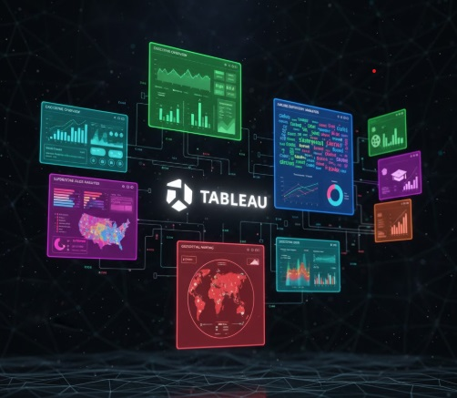

Modernized a legacy store-management workflow into a secure, modular RESTful service using Python and Flask-Smorest.
Containerized with Docker to ensure reproducibility, environment consistency, and test integrity.
AI & Modernization: Demonstrates transition from static logic to service-based architecture.
Governance & Trust: Schema validation, endpoint documentation, containerized testing.

A full-stack web application built from the ground up using
Python, Flask, SQLAlchemy, PostgreSQL, REST APIs, JavaScript, Docker, and Git/GitHub.
Designed and developed a production-style application with a Python/Flask
backend, relational PostgreSQL database, authenticated users, database
relationships, API endpoints, and interactive frontend dashboards.
Backend: Python • Flask • Flask-Smorest • SQLAlchemy • Marshmallow • PostgreSQL
Development & Deployment: REST APIs • Docker • Git/GitHub • Alembic migrations • Render
Features: User authentication • Dashboards • User-specific records • Admin functionality

End-to-end machine learning project using public health data to identify risk factors and generate predictive insights.

Supervised ML model forecasting urban transportation demand using multivariate linear regression and feature engineering.

Analyzed U.S. government employment trends using Bureau of Labor Statistics data, correcting time-series distortions via DAX.

Interactive Power BI dashboard applying DAX measures and date modeling to ensure accurate policy-ready workforce reporting.

Designed executive-facing dashboards translating complex datasets into clear operational insights for public-sector briefings.

Analyzed 40 years of revenue data to highlight format transitions from physical to digital using advanced pivot tables and charts.

Interactive dashboard creation, DAX-based calculated measures, data modeling, combo charts, tooltips, and map layers.

Built a full ETL and analytical pipeline using pure Python data structures (CSV, defaultdict, namedtuple) with missing-value handling.
I work on the front lines helping customers every day, solving problems and finding solutions.
Alongside that, I’ve built real skills in data analytics—Python, SQL, Tableau, Power BI—and applied them to projects that turn data into insights.